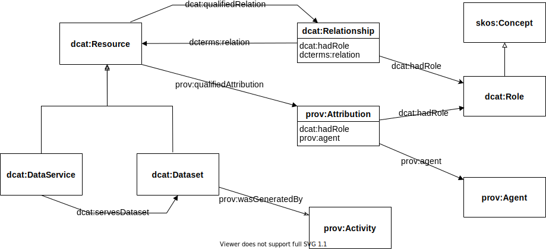

DCAT is an RDF vocabulary designed to facilitate interoperability between data catalogs published on the Web.
This document defines the schema and provides examples for its use.
DCAT enables a publisher to describe datasets and data services in a catalog using a standard model and vocabulary that facilitates the consumption and aggregation of metadata from multiple catalogs.
This can increase the discoverability of datasets and data services.
It also makes it possible to have a decentralized approach to publishing data catalogs and makes federated search for datasets across catalogs in multiple sites possible using the same query mechanism and structure.
Aggregated DCAT metadata can serve as a manifest file as part of the digital preservation process.
The namespace for DCAT terms is http://www.w3.org/ns/dcat#
The suggested prefix for the DCAT namespace is dcat
This document defines a major revision of the original DCAT vocabulary ([[?VOCAB-DCAT-20140116]]) in response to new use cases, requirements and community experience since that publication. This revision extends the original DCAT standard in line with community practice while supporting diverse approaches to data description and dataset exchange. The main changes to the DCAT vocabulary have been:
loosening of constraints in class and property definitions to promote re-use of terms and modularity
addition of a dcat:Resource class for representing any asset than can be included in the catalog, this is
now the super-class of dcat:Dataset
addition of dcat:DataService, as a sub-class of dcat:Resource, to support catalog service end-points providing access to data assets
addition of ways to represent loosely structured catalogs, where there is no distinction between a dataset and its distributions
an alignment between the DCAT vocabulary and the schema.org vocabulary
This new version of the vocabulary updates and expands the original but preserves backward compatibility. A full list of the significant changes (with links to the relevent github issues) is described in .
The exit criteria for CR focussed on v2 new features that replicate features that were included in application profiles of v1 as a way of remedying missing and necessary elements. The exit criteria also included recent commitments by organisations such as EC Joinup to adopt the DCAT v2 model in their work.
Implementation will be evidenced by showing use of the new properties/classes (or terms with equivalent meaning) in implementations of catalogs.
Issues, requirements, and features that have been considered and discussed by the Data eXchange Working Group but have not been addressed due to lack of maturity or consensus are collected in GitHub. Those believed to be a priority for a future release are in the milestone DCAT Future Priority Work.
This revised version of DCAT was developed by the Dataset Exchange Working Group in response to a new set of Use Cases and Requirements [[?DCAT-UCR]] gathered from peoples' experience with the DCAT vocabulary from the time of the original version, and new applications that were not considered in the first version. A summary of the changes from [[?VOCAB-DCAT-20140116]] is provided in .
External terms
DCAT incorporates terms from pre-existing vocabularies where stable terms with appropriate meanings could be found, such as foaf:homepage and dcterms:title.
Informal summary definitions of the externally-defined terms are included in the DCAT vocabulary for convenience, while authoritative definitions are available in the normative references.
Changes to definitions in the references, if any, supersede the summaries given in this specification.
Note that conformance to DCAT () concerns usage of only the terms in the DCAT vocabulary specification, so possible changes to other external definitions will not affect the conformance of DCAT implementations.
Please send comments
The Working Group invited publishers to describe their catalogs and datasets with the revised version of DCAT described in this document and to report their implementations following the instruction to reporting DCAT revised implementations. This information and subsequent analysis is published in the implementation report.
Introduction
Sharing data resources among different organizations, researchers, governments and citizens requires the provision of metadata.
This is irrespective of the data being open or not.
DCAT is a vocabulary for publishing data catalogs on the Web, which was originally developed in the context of government data catalogs
such as data.gov and data.gov.uk, but it is also applicable and has been used in other contexts.
DCAT 2 has extended the previous version to support further use cases and requirements [[?DCAT-UCR]].
These include the possibility of cataloging other resources in addition to
datasets, such as data services. The revision also supports describing relationships between datasets as well as between
datasets and other cataloged resources. Guidance on how to document licenses and rights statements associated with the cataloged items is provided.
DCAT provides RDF classes and properties to allow datasets and data services to be described and included in a catalog.
The use of a standard model and vocabulary facilitates the consumption and aggregation of metadata from multiple catalogs, which can:
increase the discoverability of datasets and data services
allow federated search for datasets across catalogs in multiple sites
Data described in a catalog can come in many formats, ranging from spreadsheets, through XML and RDF to various specialized formats.
DCAT does not make any assumptions about these serialization formats of the datasets but it does
distinguish between the abstract dataset and its different manifestations or distributions.
Data is often provided through a service which supports selection of an extract, sub-set, or combination of existing data, or of new data generated by some data processing function.
DCAT allows the description of a data access service to be included in a catalog.
Complementary vocabularies can be used together with DCAT to provide more detailed format-specific information.
For example, properties from the VoID vocabulary [[?VOID]] can be used within DCAT to express various statistics about a dataset if that dataset is in RDF format.
This document does not prescribe any particular method of deploying data catalogs expressed in DCAT.
DCAT information can be presented in many forms including RDF accessible via SPARQL endpoints, embedded in HTML pages as [[?HTML-RDFa]], or serialized as RDF/XML [[?RDF-SYNTAX-GRAMMAR]], [[?N3]], [[?Turtle]], [[?JSON-LD]] or other formats.
Within this document the examples use [[?Turtle]] because of its readability.
Motivation for change
The original Recommendation [[?VOCAB-DCAT-20140116]] published in January 2014 provided the basic framework for describing datasets. It made an important distinction between a dataset as an abstract idea and a distribution as a manifestation of the dataset. Although DCAT has been widely adopted, it has become clear that the original specification lacked a number of essential features that were added either through the mechanism of a profile, such as the European Commission's DCAT-AP [[?DCAT-AP]], or the development of larger vocabularies that to a greater or lesser extent built upon the base standard, such as the Healthcare and Life Sciences Community Profile [[?HCLS-Dataset]], the Data Tag Suite [[?DATS]] and more. DCAT 2 has been developed to address the specific shortcomings that have come to light through the experiences of different communities, the aim being to improve interoperability between the outputs of these larger vocabularies.
For example, in DCAT 2 we provide classes, properties and guidance to address identifiers, dataset quality information, and data citation issues.
This revision includes re-writing of the specification throughout. Significant changes from the 2014 Recommendation are marked within the text using "Note" sections, as well as being described in .
Namespaces
The namespace for DCAT is http://www.w3.org/ns/dcat#.
DCAT also makes extensive use of terms from other vocabularies, in particular Dublin Core [[?DCTERMS]].
DCAT defines a minimal set of classes and properties of its own.
Normative namespaces
Namespaces and prefixes used in normative parts of this recommendation are shown in the following table.
Prefix
Namespace IRI
Source
dc
http://purl.org/dc/elements/1.1/
[[DCTERMS]]
dcat
http://www.w3.org/ns/dcat#
[[VOCAB-DCAT]]
dcterms
http://purl.org/dc/terms/
[[DCTERMS]]
dctype
http://purl.org/dc/dcmitype/
[[DCTERMS]]
foaf
http://xmlns.com/foaf/0.1/
[[FOAF]]
locn
http://www.w3.org/ns/locn#
[[LOCN]]
odrl
http://www.w3.org/ns/odrl/2/
[[ODRL-VOCAB]]
owl
http://www.w3.org/2002/07/owl#
[[OWL2-SYNTAX]]
prov
http://www.w3.org/ns/prov#
[[PROV-O]]
rdf
http://www.w3.org/1999/02/22-rdf-syntax-ns#
[[RDF-SYNTAX-GRAMMAR]]
rdfs
http://www.w3.org/2000/01/rdf-schema#
[[RDF-SCHEMA]]
skos
http://www.w3.org/2004/02/skos/core#
[[SKOS-REFERENCE]]
spdx
http://spdx.org/rdf/terms#
[[SPDX]]
time
http://www.w3.org/2006/time#
[[OWL-TIME]]
vcard
http://www.w3.org/2006/vcard/ns#
[[VCARD-RDF]]
xsd
http://www.w3.org/2001/XMLSchema#
[[XMLSCHEMA11-2]]
Non-normative namespaces
Namespaces and prefixes used in examples and guidelines in the document and not from normative parts of the recommendation are shown in the following table.
Prefix
Namespace IRI
Source
adms
https://www.w3.org/ns/adms#
[[?VOCAB-ADMS]]
dqv
http://www.w3.org/ns/dqv#
[[?VOCAB-DQV]]
earl
http://www.w3.org/ns/earl#
[[?EARL10-Schema]]
geosparql
http://www.opengis.net/ont/geosparql#
[[?GeoSPARQL]]
oa
http://www.w3.org/ns/oa#
[[?ANNOTATION-VOCAB]]
pav
http://purl.org/pav/
[[?PAV]]
sdmx-attribute
http://purl.org/linked-data/sdmx/2009/attribute#
[[?VOCAB-DATA-CUBE]]
sdo
https://schema.org/
[[?SCHEMA-ORG]]
xhv
http://www.w3.org/1999/xhtml/vocab#
[[XHTML-VOCAB]]
A data catalog conforms to DCAT if:
Access to data is organized into datasets, distributions, and data-services.
An RDF description of the catalog itself, the corresponding cataloged resources, and distributions is available (but the choice of
RDF syntax, access protocol, and access policy are not mandated by this specification).
The contents of all metadata fields that are held in the catalog and that contain data about the catalog itself, the corresponding cataloged resources, and distributions are included in this RDF description and are expressed using the appropriate classes and properties from DCAT, except where no such class or property exists.
All classes and properties defined in DCAT are used in a way consistent with the semantics declared in this specification.
DCAT-compliant catalogs MAY include additional non-DCAT metadata fields and additional RDF data in the catalog's RDF description.
A DCAT profile is a specification for a data catalog that adds additional constraints to DCAT. A data catalog that conforms to the profile also conforms to DCAT. Additional constraints in a profile MAY include:
Cardinality constraints, including a minimum set of required metadata fields
Sub-classes and sub-properties of the standard DCAT classes and properties
Classes and properties for additional metadata fields not covered in DCAT vocabulary specification
Controlled vocabularies or IRI sets as acceptable values for properties
Requirements for specific access mechanisms (RDF syntaxes, protocols) to the catalog's RDF description
Vocabulary overview
DCAT scope
DCAT is an RDF vocabulary for representing data catalogs.
DCAT is based around seven main classes ():
dcat:Catalog represents a catalog, which is a dataset in which each individual item is a metadata record describing some resource; the scope of dcat:Catalog is collections of metadata about datasets or data services.
dcat:Resource represents a dataset, a data service or any other resource that may be described by a metadata record in a catalog.
This class is not intended to be used directly, but is the parent class of dcat:Dataset, dcat:DataService and dcat:Catalog.
Member items in a catalog should be members of one of the sub-classes, or of a sub-class of these, or of a sub-class of dcat:Resource defined in a DCAT profile or other DCAT application.
dcat:Resource is effectively an extension point for defining a catalog of any kind of resource. dcat:Dataset and dcat:DataService can be used for datasets and services which are not documented in any catalog.
dcat:Dataset represents a dataset.
A dataset is a collection of data, published or curated by a single agent or identifiable community. The notion of dataset in DCAT is broad and inclusive, with the intention of accommodating resource types arising from all communities. Data comes in many forms including numbers, text, pixels, imagery, sound and other multi-media, and potentially other types, any of which might be collected into a dataset.
dcat:Distribution represents an accessible form of a dataset such as a downloadable file.
dcat:DataService represents a data service.
A data service is a collection of operations accessible through an interface (API) that provide access to one or more datasets or data processing functions.
dcat:DatasetSeries is a dataset, which represents a collection of datasets that are published separately, but share some common characteristics that groups them.
dcat:CatalogRecord represents a metadata item in the catalog, primarily concerning the registration information, such as who added the item and when.
Overview of DCAT model, showing the classes of resources that can be members of a Catalog, and the relationships between them.
A dataset in DCAT is defined as a "collection of data, published or curated by a single agent, and available for access or download in one or more serializations or formats".
A dataset is a conceptual entity, and can be represented by one or more distributions that serialize the dataset for transfer.
Distributions of a dataset can be provided via data services.
A data service typically provides selection, extraction, combination, processing or transformation operations over datasets that might be hosted locally or remote to the service.
The result of any request to a data service is a representation of a part or all of a dataset or catalog.
A data service might be tied to specific datasets, or its source data might be configured at request- or run-time.
A data distribution service allows selection and download of a distribution of a dataset or subset.
A data discovery service allows a client to find a suitable dataset.
Other kinds of data service include data transformation services, such as coordinate transformation services, re-sampling and interpolation services, and various data processing services, including simulation and modelling services.
Note that a data service in DCAT is a collection of operations or API which provides access to data.
An interactive user-interface is often available to provide convenient access to API operations, but its description is outside the scope of DCAT.
The details of a particular data service endpoint will often be specified through a description conforming to a standard service type, which complement the scope of the DCAT vocabulary itself.
Descriptions of datasets and data services can be included in a catalog.
A catalog is a kind of dataset whose member items are descriptions of datasets and data services.
Other types of things might also be cataloged, but the scope of DCAT is currently limited to datasets and data services.
To extend the scope of a catalog beyond datasets and data services it is recommended to define additional sub-classes of dcat:Resource in a DCAT profile or other DCAT application.
To extend the scope of service descriptions beyond data distribution services it is recommended to define additional sub-classes of dcat:DataService in a DCAT profile or other DCAT application.
A catalog record describes an entry in the catalog. Notice that while dcat:Resource represents the dataset or service itself, dcat:CatalogRecord is the record that describes the registration of an item in the catalog. The use of dcat:CatalogRecord is considered optional. It is used to capture provenance information about entries in a catalog explicitly. If this is not necessary then dcat:CatalogRecord can be safely ignored.
RDF considerations
The DCAT vocabulary is an OWL2 ontology [[?OWL2-OVERVIEW]] formalized using [[?RDF-SCHEMA]].
Each class and property in DCAT is denoted by an IRI [[?RFC3987]].
Locally defined elements are in the namespace http://www.w3.org/ns/dcat#.
Elements are also adopted from several external vocabularies, in particular [[?FOAF]], [[?DCTERMS]] and [[?PROV-O]]
RDF allows resources to have global identifiers (IRIs) or to be blank nodes.
Blank nodes can be used to denote resources without explicitly naming them with an IRI.
They can appear in the subject and object position of a triple [[?RDF11-PRIMER]].
For example, in many actual DCAT catalogs, distributions are represented as blank nodes nested inside the related dataset description.
While blank nodes can offer flexibility for some use cases, in a Linked Data context, blank nodes limit our ability to collaboratively annotate data.
A blank node resource cannot be the target of a link and it can't be annotated with new information from new sources.
As one of the biggest benefits of the Linked Data approach is that "anyone can say anything anywhere", use of blank nodes undermines some of the advantages we can gain from wide adoption of the RDF model.
Even within the closed world of a single application dataset, use of blank nodes can quickly become limiting when integrating new data [[?LinkedDataPatterns]].
For these reasons, it is recommended that instances of the DCAT main classes have a global identifier, and use of blank nodes is generally discouraged when encoding DCAT in RDF.
All RDF examples in this document are written in Turtle syntax [[?Turtle]] and many are available from the DXWG code repository.
Basic example
This example provides a quick overview of how DCAT might be used to represent a government catalog and its datasets. Titles, labels and keywords are provided both in English and Spanish to demonstrate the use of language tags.
First, the catalog description:
The publisher of the catalog has the relative IRI :transparency-office. Further description of the publisher can be provided as in :
The catalog lists each of its datasets via the dcat:dataset property. In , an example dataset was mentioned with the relative IRI :dataset-001. A possible description of it using DCAT is shown below:
Five distinct temporal descriptors are shown for this dataset.
The dataset publication and revision dates are shown in dcterms:issued and dcterms:modified.
For the frequency of update of the dataset in dcterms:accrualPeriodicity, we use an instance from the content-oriented guidelines developed as part of the W3C Data Cube Vocabulary [[?VOCAB-DATA-CUBE]] efforts.
The temporal coverage or extent is given in dcterms:temporal defining a dcterms:PeriodOfTime as a closed interval indicated by dcat:startDate and dcat:endDate.
The temporal resolution, which describes the minimum spacing of items within the dataset, is given in dcat:temporalResolution using the standard datatype xsd:duration.
Additionally, the spatial coverage or extent is given dcterms:spatial using a IRI from Geonames.
The spatial resolution, which describes the minimum spatial separation of items within the dataset, is given in dcat:spatialResolutionInMeters using the standard datatype xsd:decimal.
A contact point is provided where comments and feedback about the dataset can be sent.
Further details about the contact point, such as email address or telephone number, can be provided using vCard [[?VCARD-RDF]].
One representation of the dataset :dataset-001-csv can be downloaded as a 5kB CSV file. This is
represented as an RDF resource of type dcat:Distribution.
Classifying datasets thematically
The catalog classifies its datasets according to a set of domains represented by the relative IRI :themes. SKOS [[?SKOS-REFERENCE]] can be used to describe the domains used:
Notice that this dataset is classified under the domain represented by the relative IRI :accountability.
It is recommended to define the concept as part of the concepts scheme identified by the IRI :themes that was used to describe the catalog domains. An example SKOS description:
Classifying dataset types
The type or genre of a dataset can be indicated using the dcterms:type property.
It is recommended that the value of the property is taken from a well governed and broadly recognised set of resource types,
such as the DCMI Type Vocabulary [[?DCTERMS]],
the MARC Genre/Terms Scheme,
the [[?ISO-19115-1]] MD_Scope codes,
the DataCite resource types,
or the PARSE.Insight content-types from Re3data [[?RE3DATA-SCHEMA]].
In the following examples, a (notional) dataset is classified separately using values from different vocabularies.
It is also possible for multiple classifications to be present in a single description.
Describing catalog records metadata
If the catalog publisher decides to keep metadata
describing its records (i.e. the records containing metadata
describing the datasets), dcat:CatalogRecord can be used. For example,
while :dataset-001 was issued on 2011-12-05, its description on Imaginary Catalog was added on 2011-12-11. This can be represented by DCAT as in :
Dataset available only behind some Web page
:dataset-002 is available as a CSV file. However :dataset-002 can only be obtained through some Web page
where the user needs to follow some links, provide some information and check some boxes
before accessing the data.
Notice the use of a dcat:landingPage and the definition of the dcat:Distribution instance.
A dataset available as a download and behind some Web page
On the other hand, :dataset-003 can be obtained through some landing page but also can be downloaded from a known URL.
Notice that we used dcat:downloadURL with the downloadable distribution and that the other distribution accessible through the landing page
does not have to be defined as a separate dcat:Distribution instance.
A dataset available through a service
:dataset-004 is distributed in different representations from different services.
The dcat:accessURL for each dcat:Distribution corresponds with the dcat:endpointURL of the service.
Each service is characterized by its general type using dcterms:type (here using values from the INSPIRE spatial data service type vocabulary),
its specific API definition using dcterms:conformsTo,
with the detailed description of the individual endpoint parameters and options linked using dcat:endpointDescription.
Vocabulary specification
RDF representation
The (revised) DCAT vocabulary is available in RDF.
The primary artefact dcat2.ttl is a serialization of the core DCAT vocabulary.
Alongside it are a set of other RDF files that provide additional information, including:
non-normative alignments to other vocabularies, provided for guidance
additional axioms, which can be useful in some contexts
the files dcat2014.ttl and dcat2014.rdf that correspond to the 2014 version of DCAT [[?VOCAB-DCAT-20140116]]
Elements from other vocabularies
DCAT requires use of elements from a number of other vocabularies.
Furthermore, DCAT may be augmented by additional elements from external vocabularies, following the usual RDFS [[!RDF-SCHEMA]] and OWL2 [[!OWL2-OVERVIEW]] rules and patterns.
Complementary vocabularies
Elements from a number of complementary vocabularies MAY be used together with DCAT to provide more detailed information.
For example: properties from the VoID vocabulary [[?VOID]] allow the description of various statistics about a DCAT-described dataset if that dataset is in RDF format; properties from the Provenance ontology [[!PROV-O]] can be used to provide more information about the workflow that generated a dataset or service and related activities and agents; classes and properties from the Organization Ontology [[?VOCAB-ORG]] can be used to explain additional details of responsible agents.
Element definitions
The definitions (including domain and range) of terms outside the DCAT namespace are provided here only for convenience and MUST NOT be considered normative. The authoritative definitions of these terms are in the corresponding specifications, i.e. [[!DC11]], [[!DCTERMS]], [[!FOAF]], [[!PROV-O]], [[!RDF-SCHEMA]], [[!SKOS-REFERENCE]], [[!XMLSCHEMA11-2]] and [[?VCARD-RDF]].
Class: Catalog
The following properties are specific to this class:
foaf:homepage is an inverse functional property (IFP) which means that it MUST be unique and precisely identify the Web-page for the resource. This property indicates the canonical Web-page, which might be helpful in cases where there is more than one Web-page about the resource.
It is recommended that the taxonomy is organized in a skos:ConceptScheme, skos:Collection, owl:Ontology or similar, which allows each member to be denoted by an IRI and published as Linked Data.
dcat:Resource is an extension point that enables the definition of any kind of catalog. Additional sub-classes may be defined in a DCAT profile or other DCAT application for catalogs of other kinds of resources.
Date of formal issuance (e.g., publication) of the item.
Range:
rdfs:Literal
encoded using the relevant ISO 8601 Date and Time compliant string [[?DATETIME]] and typed using the appropriate XML Schema datatype [[!XMLSCHEMA11-2]] (xsd:gYear, xsd:gYearMonth, xsd:date, or xsd:dateTime).
Usage note:
This property SHOULD be set using the first known date of issuance.
Most recent date on which the item was changed, updated or modified.
Range:
rdfs:Literal
encoded using the relevant ISO 8601 Date and Time compliant string [[?DATETIME]] and typed using the appropriate XML Schema datatype [[!XMLSCHEMA11-2]] (xsd:gYear, xsd:gYearMonth, xsd:date, or xsd:dateTime).
Usage note:
The value of this property indicates a change to the actual item, not a change to the catalog record. An absent value MAY indicate that the item has never changed after its initial publication, or that the date of last modification is not known, or that the item is continuously updated.
A language of the item. This refers to the natural language used for textual metadata (i.e. titles, descriptions, etc) of a cataloged resource (i.e. dataset or service) or the textual values of a dataset distribution
Resources defined by the Library of Congress (ISO 639-1, ISO 639-2) SHOULD be used.
If a ISO 639-1 (two-letter) code is defined for language, then its corresponding IRI SHOULD be used; if no ISO 639-1 code is defined, then IRI corresponding to the ISO 639-2 (three-letter) code SHOULD be used.
Usage note:
Repeat this property if the resource is available in multiple languages.
Usage note:
The value(s) provided for members of a catalog (i.e. dataset or service) override the value(s) provided for the catalog if they conflict.
Usage note:
If representations of a dataset are available for each language separately, define an instance of dcat:Distribution for each language and describe the specific language of each distribution using dcterms:language (i.e. the dataset will have multiple dcterms:language values and each distribution will have just one as the value of its dcterms:language property).
The set of themes used to categorize the resources are organized in a skos:ConceptScheme, skos:Collection, owl:Ontology or similar, describing all the categories and their relations in the catalog.
Some members of these controlled vocabularies are not strictly suitable for datasets or data services (e.g. DCMI Type Event, PhysicalObject; [[?ISO-19115-1]] CollectionHardware, CollectionSession, Initiative, Sample, Repository), but might be used in the context of other kinds of catalogs defined in DCAT profiles or applications.
Usage note:
To describe the file format, physical medium, or dimensions of the resource, use the dcterms:format element.
A resource with an unspecified relationship to the cataloged item.
Usage note:
dcterms:relation SHOULD be used where the nature of the relationship between a cataloged item and related resources is not known. A more specific sub-property SHOULD be used if the nature of the relationship of the link is known.
The property dcat:distribution SHOULD be used to link from a dcat:Dataset to a representation of the dataset, described as a dcat:Distribution
Many existing and legacy catalogs do not distinguish between dataset components, representations, documentation, schemata and other resources that are lumped together as part of a dataset.
dcterms:relation is a super-property of a number of more specific properties which express more precise relationships, so use of dcterms:relation is not inconsistent with a subsequent reclassification with more specific semantics, though the more specialized sub-properties SHOULD be used to link a dataset to component and supplementary resources if possible.
If the distribution(s) are accessible only through a landing page
(i.e. direct download URLs are not known), then the landing page link SHOULD be duplicated as dcat:accessURL on a distribution. (see )
Used to link to an Agent where the nature of the relationship is known but does not match one of the standard [[?DCTERMS]] properties (dcterms:creator, dcterms:publisher).
Use dcat:hadRole on the prov:Attribution to capture the responsibility of the Agent with respect to the Resource.
See for usage examples.
This DCAT property follows the common qualified relation pattern described in .
Information about rights expressed as an ODRL policy [[ODRL-MODEL]] using the ODRL vocabulary [[ODRL-VOCAB]] MAY be provided for the resource. See also guidance at .
A related resource, such as a publication, that references, cites, or otherwise points to the cataloged resource.
Usage note:
In relation to the use case of data citation, when the cataloged resource is a dataset, the dcterms:isReferencedBy property allows to relate the dataset to the resources (such as scholarly publications) that cite or point to the dataset. Multiple dcterms:isReferencedBy properties can be used to indicate the dataset has been referenced by multiple publications, or other resources.
Usage note:
This property is used to associate a resource with the resource (of type dcat:Resource) in question. For other relations to resources not covered with this property, the more generic property dcat:qualifiedRelation can be used. See also .
This property is meant to be used to specify a version chain, consisting of snapshots of a resource.
The notion of version used by this property is limited to versions resulting from revisions occurring to a resource as part of its life-cycle. One of the typical cases here is representing the history of the versions of a dataset that have been released over time.
This property is intended for relating a non-versioned or abstract resource to several versioned resources, e.g. snapshots [[?PAV]].
The notion of version used by this property is limited to versions resulting from revisions occurring to a resource as part of its life-cycle. Therefore, its semantics is more specific than its super-property dcterms:hasVersion, which makes use of a broader notion of version, including editions and adaptations.
This property is intended for relating a non-versioned or abstract resource to a single snapshot that can be used as a permalink to indicate the current version of the content [[?PAV]].
The notion of version used by this property is limited to versions resulting from revisions occurring to a resource as part of its life-cycle.
In case of backward compatibility issues with the previous version of the resource, a textual description of them SHOULD be specified by using this property.
DCAT does not prescribe the use of any specific set of life-cycle statuses, but refers to existing standards and community practices fit for the relevant application scenario.
In DCAT this property is used for resources belonging to a dcat:DatasetSeries.
It is important to note that this property is different from dcat:previousVersion, as it does not denote a previous version of the same resource, but a distinct resource immediately preceding the current one in an ordered collection of resources.
See also:
,
,
.
For guidance on the use of this property, see .
Class: Catalog Record
The following properties are specific to this class (dcat:CatalogRecord):
A record in a catalog, describing the registration of a single dcat:Resource.
Usage note
This class is optional and not all catalogs will use it. It exists for catalogs where a distinction is made between metadata about
a dataset or service and metadata about the entry in the catalog about the dataset or service. For example, the publication date property of the dataset reflects
the date when the information was originally made available by the publishing agency, while the publication date of the catalog record is the date when the dataset was added to the catalog.
In cases where both dates differ, or where only the latter is known, the publication date SHOULD only be specified for the catalog record.
Notice that the W3C PROV Ontology [[?PROV-O]] allows describing further provenance information such as the details of the process and the agent involved in a particular change to a dataset or its registration.
See also
If a catalog is represented as an RDF Dataset with named graphs (as defined in [[?SPARQL11-QUERY]]),
then it is appropriate to place the description of each dataset
(consisting of all RDF triples that mention the dcat:Dataset, dcat:CatalogRecord, and any of its dcat:Distributions)
into a separate named graph. The name of that graph SHOULD be the IRI of the catalog record.
The date of listing (i.e. formal recording) of the corresponding dataset or service in the catalog.
Range:
rdfs:Literal
encoded using the relevant ISO 8601 Date and Time compliant string [[?DATETIME]] and typed using the appropriate XML Schema datatype [[!XMLSCHEMA11-2]] (xsd:gYear, xsd:gYearMonth, xsd:date, or xsd:dateTime).
Usage note:
This indicates the date of listing the dataset in the catalog and not the publication date of the dataset itself.
Most recent date on which the catalog entry was changed, updated or modified.
Range:
rdfs:Literal
encoded using the relevant ISO 8601 Date and Time compliant string [[?DATETIME]] and typed using the appropriate XML Schema datatype [[!XMLSCHEMA11-2]] (xsd:gYear, xsd:gYearMonth, xsd:date, or xsd:dateTime).
Usage note:
This indicates the date of last change of a catalog entry, i.e. the catalog metadata description of the dataset, and not the date of the dataset itself.
Information about licenses and rights SHOULD be provided on the level of Distribution. Information about licenses and rights MAY be provided for a Dataset in addition to but not instead of the information provided for the Distributions of that Dataset. Providing license or rights information for a Dataset that is different from information provided for a Distribution of that Dataset SHOULD be avoided as this can create legal conflicts.
This class describes the conceptual dataset. One or more representations might be available, with differing schematic layouts and formats or serializations.
Usage note:
This class describes the actual dataset as published by the dataset provider. In cases where a distinction between the actual dataset and its entry in the catalog is necessary (because metadata such as modification date might differ), the catalog record class can be used for the latter.
Usage note:
The notion of dataset in DCAT is broad and inclusive, with the intention of accommodating resource types arising from all communities. Data comes in many forms including numbers, text, pixels, imagery, sound and other multi-media, and potentially other types, any of which might be collected into a dataset.
The value of dcterms:accrualPeriodicity gives the rate at which the dataset-as-a-whole is updated.
This may be complemented by dcat:temporalResolution to give the time between collected data points in a time series.
Examples showing how dcterms:accrualPeriodicity and dcat:temporalResolution may be combined are given in .
Normally, child datasets in dataset series are represented as dcat:Dataset. The use of dcat:Distribution for typing child datasets is however recognized as a possible alternative, whenever it addresses more effectively the requirements of a given application scenario.
The spatial coverage of a dataset may be encoded as an instance of dcterms:Location, or may be indicated using a IRI reference (link) to a resource describing a location. It is recommended that links are to entries in a well maintained gazetteer such as Geonames.
Options for expressing the details of a dcterms:Location are provided in .
If the dataset is an image or grid this should correspond to the spacing of items. For other kinds of spatial datasets, this property will usually indicate the smallest distance between items in the dataset.
The range of this property is a decimal number representing a length in meters.
This is intended to provide a summary indication of the spatial resolution of the data as a single number.
More complex descriptions of various aspects of spatial precision, accuracy, resolution and other statistics can be provided using the Data Quality Vocabulary [[?VOCAB-DQV]].
dcterms:PeriodOfTime (An interval of time that is named or defined by its start and end dates)
Usage note:
The temporal coverage of a dataset may be encoded as an instance of dcterms:PeriodOfTime, or may be indicated using a IRI reference (link) to a resource describing a time period or interval.
Options for expressing the details of a dcterms:PeriodOfTime are provided in .
If the dataset is a time-series this should correspond to the spacing of items in the series. For other kinds of dataset, this property will usually indicate the smallest time difference between items in the dataset.
This is intended to provide a summary indication of the temporal resolution of the data distribution as a single value.
More complex descriptions of various aspects of temporal precision, accuracy, resolution and other statistics can be provided using the Data Quality Vocabulary [[?VOCAB-DQV]].
The distinction between dcat:temporalResolution and dcterms:accrualPeriodicity is illustrated by examples in .
prov:Activity An activity is something that occurs over a period of time and acts upon or with entities; it may include consuming, processing, transforming, modifying, relocating, using, or generating entities.
Usage note:
The activity associated with generation of a dataset will typically be an initiative, project, mission, survey, on-going activity ("business as usual") etc. Multiple prov:wasGeneratedBy properties can be used to indicate the dataset production context at various levels of granularity.
Usage note:
Use prov:qualifiedGeneration to attach additional details about the relationship between the dataset and the activity, e.g. the exact time that the dataset was produced during the lifetime of a project
Details about how to describe the activity that generated a dataset, such as a project, initiative, on-going activity, mission or survey, are out of scope for this document.
prov:Activity provides for some basic properties such as begin and end time, associated agents etc.
Further details may be provided through classes defined in applications.
A number of ontologies for describing projects are available, for example
VIVO for academic research projects [[?VIVO-ISF]],
DOAP (Description of a Project) for software projects [[?DOAP]], and
DBPedia for general projects [[?DBPEDIA-ONT]] which are expected to be suitable for different applications.
Class: Dataset Series
The following properties of the super-classes dcat:Resource and dcat:Dataset are also available for use:
Dataset series can be also soft-typed via property dcterms:type as in the approach used in [[?GeoDCAT-AP]], and adopted in [[?DCAT-AP-IT]] and [[?GeoDCAT-AP-IT]]).
Usage note:
Common scenarios for dataset series include: time series composed of periodically released subsets; map-series composed of items of the same type or theme but with differing spatial footprints.
Class: Distribution
The following properties are specific to this class:
A specific representation of a dataset. A dataset might be available in multiple serializations that may differ in various ways, including natural language, media-type or format, schematic organization, temporal and spatial resolution, level of detail or profiles (which might specify any or all of the above).
Usage note:
This represents a general availability of a dataset. It implies no information
about the actual access method of the data, i.e. whether by direct download, API, or through a Web page.
The use of dcat:downloadURL property indicates directly downloadable distributions.
See also:
Links between a dcat:Distribution and services or Web addresses where it can be accessed are expressed using dcat:accessURL, dcat:accessService, dcat:downloadURL, as shown in and described in the definitions below.
Date of formal issuance (e.g., publication) of the distribution.
Range:
rdfs:Literal
encoded using the relevant ISO 8601 Date and Time compliant string [[?DATETIME]] and typed using the appropriate XML Schema datatype [[!XMLSCHEMA11-2]] (xsd:gYear, xsd:gYearMonth, xsd:date, or xsd:dateTime).
Usage note:
This property SHOULD be set using the first known date of issuance.
Most recent date on which the distribution was changed, updated or modified.
Range:
rdfs:Literal
encoded using the relevant ISO 8601 Date and Time compliant string [[?DATETIME]] and typed using the appropriate XML Schema datatype [[!XMLSCHEMA11-2]] (xsd:gYear, xsd:gYearMonth, xsd:date, or xsd:dateTime).
Information about licenses and rights SHOULD be provided on the level of Distribution. Information about licenses and rights MAY be provided for a Dataset in addition to but not instead of the information provided for the Distributions of that Dataset. Providing license or rights information for a Dataset that is different from information provided for a Distribution of that Dataset SHOULD be avoided as this can create legal conflicts. See also guidance at .
dcterms:license, which is a sub-property of dcterms:rights, can be used to link a distribution to a license document. However, dcterms:rights allows linking to a rights statement that can include licensing information as well as other information that supplements the license such as attribution.
Information about licenses and rights SHOULD be provided on the level of Distribution. Information about licenses and rights MAY be provided for a Dataset in addition to but not instead of the information provided for the Distributions of that Dataset. Providing license or rights information for a Dataset that is different from information provided for a Distribution of that Dataset SHOULD be avoided as this can create legal conflicts. See also guidance at .
Information about rights expressed as an ODRL policy [[ODRL-MODEL]] using the ODRL vocabulary [[ODRL-VOCAB]] MAY be provided for the distribution. See also guidance at .
dcat:accessURL SHOULD be used for the URL of a service or location that can provide access to this distribution, typically through a Web form, query or API call.
dcat:downloadURL is preferred for direct links to downloadable resources.
If the distribution(s) are accessible only through a landing page (i.e. direct download URLs are not known), then the landing page URL associated with the dcat:Dataset SHOULD be duplicated as access URL on a distribution (see ).
See also
,
dcat:accessURL matches the property-chain dcat:accessService/dcat:endpointURL. In the RDF representation of DCAT this is axiomatized as an OWL property-chain axiom.
The URL of the downloadable file in a given format. E.g. CSV file or RDF file. The format is indicated by the distribution's dcterms:format and/or dcat:mediaType
If the dataset is an image or grid this should correspond to the spacing of items. For other kinds of spatial datasets, this property will usually indicate the smallest distance between items in the dataset.
Usage note:
Alternative spatial resolutions might be provided as different dataset distributions
The range of this property is a decimal number representing a length in meters.
This is intended to provide a summary indication of the spatial resolution of the data distribution as a single number.
More complex descriptions of various aspects of spatial precision, accuracy, resolution and other statistics can be provided using the Data Quality Vocabulary [[?VOCAB-DQV]].
If the dataset is a time-series this should correspond to the spacing of items in the series. For other kinds of dataset, this property will usually indicate the smallest time difference between items in the dataset.
Usage note:
Alternative temporal resolutions might be provided in different dataset distributions
This is intended to provide a summary indication of the temporal resolution of the data distribution as a single value.
More complex descriptions of various aspects of temporal precision, accuracy, resolution and other statistics can be provided using the Data Quality Vocabulary [[?VOCAB-DQV]].
An established standard to which the distribution conforms.
Range:
dcterms:Standard (A basis for comparison; a reference point against which other things can be evaluated.)
Usage note:
This property SHOULD be used to indicate the model, schema, ontology, view or profile that this representation of a dataset conforms to. This is (generally) a complementary concern to the media-type or format.
This property SHOULD be used when the media type of the distribution is defined in IANA [[!IANA-MEDIA-TYPES]], otherwise dcterms:format MAY be used with different values.
This property to be used when the files in the distribution are compressed, e.g. in a ZIP file. The format SHOULD be expressed using a media type as defined by IANA [[!IANA-MEDIA-TYPES]], if available.
The package format of the distribution in which one or more data files are grouped together, e.g. to enable a set of related files to be downloaded together.
This property to be used when the files in the distribution are packaged, e.g. in a TAR file, a Frictionless Data Package or a Bagit file. The format SHOULD be expressed using a media type as defined by IANA [[!IANA-MEDIA-TYPES]], if available.
The kind of service can be indicated using the dcterms:type property. Its value may be taken from a controlled vocabulary such as the INSPIRE spatial data service type code list [[?INSPIRE-SDST]].
For examples on the use of this class and related properties, see .
The endpoint description gives specific details of the actual endpoint instances, while dcterms:conformsTo is used to indicate the general standard or specification that the endpoints implement.
Usage note:
An endpoint description may be expressed in a machine-readable form, such as an OpenAPI (Swagger) description [[?OpenAPI]], an OGC GetCapabilities response [[?WFS]], [[?ISO-19142]], [[?WMS]], [[?ISO-19128]], a SPARQL Service Description [[?SPARQL11-SERVICE-DESCRIPTION]], an [[?OpenSearch]] or [[?WSDL20]] document, a Hydra API description [[?HYDRA]], else in text or some other informal mode if a formal representation is not possible.
A category or a theme used to describe datasets in the catalog.
Usage note:
It is recommended to use either skos:inScheme or skos:topConceptOf on every skos:Concept used to classify datasets to link it to the concept scheme it belongs to. This concept scheme is typically associated with the catalog using dcat:themeTaxonomy.
May be used in a qualified-attribution to specify the role of an Agent with respect to an Entity. It is recommended that the value be taken from a controlled vocabulary of agent roles, such as [[?ISO-19115]] CI_RoleCode.
Usage note:
May be used in a qualified-relation to specify the role of an Entity with respect to another Entity. It is recommended that the value be taken from a controlled vocabulary of entity roles.
This DCAT property complements prov:hadRole which provides the function of an entity or agent with respect to an activity.
Class: Role
Examples illustrating use of this class are given in .
Used in a qualified-attribution to specify the role of an Agent with respect to an Entity. It is recommended that the values be managed as a controlled vocabulary of agent roles, such as [[?ISO-19115-1]] CI_RoleCode.
Usage note:
Used in a qualified-relation to specify the role of an Entity with respect to another Entity.
It is recommended that the values be managed as a controlled vocabulary of entity roles such as
An interval of time that is named or defined by its start and end.
Usage note:
The start and end of the interval SHOULD be given by using properties
dcat:startDate
or time:hasBeginning,
and dcat:endDate
or time:hasEnd, respectively.
The interval can also be open - i.e., it can have just a start or just an end.
rdfs:Literal encoded using the relevant ISO 8601 Date and Time compliant string [[?DATETIME]] and typed using the appropriate XML Schema datatype [[!XMLSCHEMA11-2]] (xsd:gYear, xsd:gYearMonth, xsd:date, or xsd:dateTime).
rdfs:Literal encoded using the relevant ISO 8601 Date and Time compliant string [[?DATETIME]] and typed using the appropriate XML Schema datatype [[!XMLSCHEMA11-2]]
Use of the property time:hasBeginning entails that value of the dcterms:temporal property is a member of the time:TemporalEntity class from [[OWL-TIME]]. In this context this could be taken to imply that dcterms:PeriodOfTime is equivalent to the sub-class time:ProperInterval
Use of the property time:hasEnd entails that value of the dcterms:temporal property is a member of the time:TemporalEntity class from [[OWL-TIME]]. In this context this could be taken to imply that dcterms:PeriodOfTime is equivalent to the sub-class time:ProperInterval
For an extensive geometry (i.e., a set of coordinates denoting the vertices of the relevant geographic area), the property locn:geometry [[LOCN]] SHOULD be used.
For a geographic bounding box delimiting a spatial area the property dcat:bbox SHOULD be used.
For the geographic center of a spatial area, or another characteristic point, the property dcat:centroid SHOULD be used.
The range of this property (locn:Geometry) allows for any type of geometry specification. E.g., the geometry could be encoded by a literal, as WKT (geosparql:wktLiteral [[GeoSPARQL]]), or represented by a class, as geosparql:Geometry (or any of its subclasses) [[GeoSPARQL]].
The range of this property (rdfs:Literal) is intentionally generic, with the purpose of allowing different geometry literal encodings. E.g., the geometry could be encoded as a WKT literal (geosparql:wktLiteral [[GeoSPARQL]]).
The range of this property (rdfs:Literal) is intentionally generic, with the purpose of allowing different geometry literal encodings. E.g., the geometry could be encoded as a WKT literal (geosparql:wktLiteral [[GeoSPARQL]]).
A Checksum is a value that allows to check the integrity of the contents of a file. Even small changes to the content of the file will change its checksum. This class allows the results of a variety of checksum and cryptographic message digest algorithms to be represented [[SPDX]].
Usage note:
The Checksum includes the algorithm (spdx:algorithm) and value (spdx:checksumValue) that allows the integrity of a file to be verified to ensure no errors occurred in transmission or storage.
The properties described in do not intentionally include inverses, with the purpose of ensuring interoperability also in systems not making use of OWL reasoning.
However, recognizing that inverses are needed for some use cases, DCAT supports them, but with the requirement that they MAY be used only in addition to those described in , and that they MUST NOT be used to replace them.
The following table lists the inverse properties supported in DCAT.
The scientific and data provider communities use a number of different identifiers for publications, authors and data. DCAT primarily relies on persistent HTTP IRIs as an effective way of making identifiers actionable. Notably, quite a few identifier schemes can be encoded as dereferenceable HTTP IRIs, and some of them are also returning machine-readable metadata (e.g., DOIs [[?ISO-26324]] and ORCIDs). Regardless, data providers still might need to refer to legacy identifiers, non-HTTP dereferenceable identifiers, locally minted or third-party-provided identifiers. In these cases, [[?DCTERMS]] and [[?VOCAB-ADMS]] can be of use.
The property dcterms:identifier explicitly indicates HTTP IRIs as well as legacy identifiers. In the following examples, dcterms:identifier identifies a dataset, but it can similarly be used with any kind of resources.
Proxy dereferenceable IRIs can be used when resources have not HTTP dereferenceable IDs. For example, in , https://example.org/proxyid is a proxy for id.
The property adms:identifier [[?VOCAB-ADMS]] can express other locally minted identifiers or external identifiers, like DOI, ELI, arΧiv for creative works and ORCID, VIAF, ISNI for actors such as authors and publishers, as long as the identifiers are globally unique and stable.
uses adms:schemaAgency and dcterms:creator to represent the authority that defines the identifier scheme (e.g., the DOI foundation in the example), adms:schemaAgency is used when the authority has no IRI associated. The CrossRef and DataCite display guidelines recommend displaying DOIs as full URL link in the form https://doi.org/10.xxxx/xxxxx/.
does not represent the authority responsible for assigning and maintaining identifiers using that scheme (e.g., Zenodo) as naming the registrant goes against the philosophy of DOI, where the sub-spaces are abstracted from the organization that registers them, with the advantage that DOIs do not change when the organization changes or the responsibility for that sub-space is handed over to someone else. shows a locally minted identifier for the creator of the dataset (e.g., https://example.org/PoelenJorritHID) and its correspondent ORCID identifier (e.g., https://orcid.org/0000-0003-3138-4118).
When the HTTP dereferenceable ID returns an RDF/OWL description for the dataset, the use of owl:sameAs might be considered. For example,
when dereferenced with media type text/turtle, https://doi.org/10.5281/zenodo.1486279 returns a [[?SCHEMA-ORG]] description for the dataset, which might dynamically enrich the description provided by https://example.org/id.
The need to distinguish between primary and alternative (or legacy) identifiers for a dataset within DCAT has been posed as a requirement. However, it is very much application-specific and would be better addressed in DCAT profiles rather than mandating a general approach.
Depending on the application context, specific guidelines such as "DCAT-AP: How to manage duplicates?" can be adopted for distinguishing authoritative datasets from dataset harvested by third parties catalogs.
Indicating common identifier types
If identifiers are not HTTP dereferenceable, common identifier types can be served as RDF datatypes [[?RDF11-CONCEPTS]] or custom OWL datatypes [[OWL2-SYNTAX]] for the sake of interoperability, see ex:type in .
If a registered IRI type is used (following [[?RFC3986]], § 3.1 Scheme), the identifier scheme is part of the IRI; thus indicating a separate identifier scheme in 'type' is redundant. For example, DOI is registered as a namespace in the info IRI scheme [[?IANA-URI-SCHEMES]] (see DOI FAQ #11), so according to [[?RFC3986]], it should be encoded as in .
Selecting the right way to express conditions for access to and re-use of resources can be complex.
Implementers should always seek legal advice before deciding which conditions apply to the resource being described.
This specification distinguishes three main situations:
one where a statement is associated with a resource that is explicitly declared as a 'license';
a second, where the statement is associated with a resource denoting only access rights;
a third, covering all the other cases - i.e., statements not concerning licensing conditions and/or access rights (e.g., copyright statements).
To address these scenarios, it is recommended to use the property dcterms:rights, and its sub-properties dcterms:license and dcterms:accessRights. More precisely:
use dcterms:accessRights to express statements concerning only access rights (e.g., whether data can be accessed by anyone or just by authorized parties);
use dcterms:rights for all the other types of rights statements - those which are not covered by dcterms:license and dcterms:accessRights, such as copyright statements.
Finally, in the particular case when rights are expressed via ODRL policies, it is recommended to use the odrl:hasPolicy property as the link from the description of the cataloged resource or distribution to the ODRL policy, in addition to the corresponding [[DCTERMS]] property that matches the same ODRL policy type.
Time and space
Temporal properties
Five temporal properties of resources may be described using DCAT.
The release time of a resource is given using dcterms:issued.
The value is usually encoded as a xsd:date.
The revision or update time of a resource is given using dcterms:modified.
The value is usually encoded as a xsd:date.
The minimum temporal separation of items in a dataset is given using dcat:temporalResolution.
The value is encoded as a xsd:duration.
The update schedule and the temporal resolution can be combined to support the description of different kinds of time-series data as shown below.
The temporal extent of a dataset is given using dcterms:temporal.
The value is a dcterms:PeriodOfTime.
A number of options for expressing the details of a dcterms:PeriodOfTime are recommended in .
Examples of these follow.
Spatial properties
Two spatial properties of datasets may be described using DCAT.
The minimum spatial separation of items in a dataset is given using dcat:spatialResolutionInMeters.
The value is a decimal number.
The spatial extent of a dataset is given using dcterms:spatial.
The value is a dcterms:Location.
A number of options for expressing the details of a dcterms:Location are recommended in .
Examples of these follow.
Versioning
The notion of version is often used as a generic term to denote some kind of relationship between a resource and a derived one. Examples, among others, include revisions, editions, adaptations, and translations.
This section focuses specifically on how to use DCAT to describe versions resulting from a revision - i.e., from changes occurring to a resource as part of its life-cycle.
For this purpose, DCAT builds upon existing vocabularies, in particular the versioning component of the [[?PAV]] ontology, and the relevant terms from [[?DCTERMS]], [[?OWL2-OVERVIEW]], and [[?VOCAB-ADMS]].
It is important to note that versioning can be applied to any of the first class citizens DCAT resources, including Catalogs, Catalog Records, Datasets, Distributions.
Note also that the DCAT approach described in the following sections is meant to be complementary with those already used in specific types of resources (e.g., [[OWL2-OVERVIEW]] provides a set of versioning properties for ontologies), as well as in given domains and communities. For a comparison between the DCAT versioning approach and those of other vocabularies, see .
Relationships between versions
DCAT supports the following kinds of relationships between versions:
Those indicating the version chain and hierarchy (the version history).
Those indicating whether a version is replaced/superseded by another one.
Version chains and hierarchies
DCAT defines specific properties for describing version history, aligned with the corresponding [[?PAV]] ones:
Property dcat:previousVersion is used to build a version chain, that can be navigated backward from a given version to the first one. This reflects the most typical use case - i.e., linking different versions published as distinct resources in a catalog.
In addition to this, property dcat:hasVersion can be used to specify a version hierarchy, by linking an abstract resource to its versions.
If needed, the version hierarchy can be further described by specific properties. More precisely, property dcat:hasCurrentVersion link an abstract resource to snapshot corresponding to the current version of the content, whereas property dcat:isVersionOf (inverse of dcat:hasVersion) gives the possibility of specifying a back link from a version to the abstract resource (for the use of this property, see ).
Note that the only properties necessary to specify a version chain and hierarchy are, respectively, dcat:previousVersion and dcat:hasVersion. Whether to use or not the other ones depends on the requirements of the relevant use case.
The following example reuses those in § 8.6 Data Versioning of [[DWBP]] and revises them to show how to specify a version chain and hierarchy on a bus stops dataset, by using the properties described in this section.
Versions replaced by other ones
Another type of relationship concerns whether a given version replaces/supersedes another one. For this purpose, DCAT reuses the relevant [[DCTERMS]] property, namely, dcterms:replaces, plus its inverse dcterms:isReplacedBy, in case a back link needs to be provided.
It is worth noting that these properties are not denoting by themselves a version chain - i.e., a version is not necessarily replacing its immediate predecessor.
The following example reuses the description of the MyCity bus stop dataset in to show how replaced versions can be specified in DCAT.
Version information
Besides the relationships illustrated in the previous section, versioned resources may be associated with additional information, describing, e.g., their differences with the original resource (the version "delta"), the version identifier, and release date.
For these purposes, DCAT makes use of the following properties:
dcterms:issued [[?DCTERMS]], for the version release date;
adms:versionNotes [[?VOCAB-ADMS]], for a textual description of the changes, including backward compatibility issues with the previous version of the resource.
The life-cycle of a resource is an aspect orthogonal to versioning, and sometimes strictly related. The evolution of a resource along its life-cycle (from its conception, to its creation and publication) may result in new versions, although this is not always the case (e.g., in case an approval workflow is in place, the resource may not undergo any change if no revision is needed). Similarly, the creation of a new version may not necessarily lead to a change in status (e.g., when changes are not substantial, and/or are implemented on resources still in development). Moreover, when a resource is replaced because of a revision (correcting errors, adding new content, etc.), it may be moved to a different life-cycle status (e.g., deprecation or withdrawl).
It is worth noting that the status of a resource with respect to its life-cycle is often an important piece of information by itself, from both the data provider's and data consumers' perspectives. For a data consumer, it is important to know if a resource is still in development or not, as well as if it is deprecated or withdrawn (and, in such cases, if there is a new version to be used). On the other hand, for a data provider, flagging a resource with its status in the life-cycle is fundamental for the correct administration of the data management workflow. E.g., a resource before being published may need to be stable, and possibly flagged as approved and/or registered. Finally, besides the actual status of a resource, another useful piece of information is when the resource moved to a different status (e.g., when it was created, reviewed, accepted, published).
As for versioning, the resource life-cycle depends on community practices, data management policies, and the workflows in place. Moreover, different resource types (e.g., datasets vs catalog records) may have different life-cycle statuses.
For the specification of life-cycle statuses, DCAT makes use of property adms:status [[?VOCAB-ADMS]], along with the appropriate [[?DCTERMS]] time-related properties (dcterms:created, dcterms:dateSubmitted, dcterms:dateAccepted, dcterms:dateCopyrighted, dcterms:issued, dcterms:modified, dcterms:valid). However, DCAT does not prescribe the use of any specific set of life-cycle statuses, but refers to existing standards and community practices fit for the relevant application scenario.
Complementary approaches to versioning
The DCAT versioning approach can coexist with existing versioning practices - as those used in specific communities, domains, and resource types.
As an example, the following table shows the correspondences between the DCAT versioning properties and the vocabularies most frequently used to specify similar concepts, namely, OWL, for ontologies, [[?DCTERMS]], and [[?PROV-O]].
Similar (but not equivalent) versioning properties in DCAT, OWL, [[?DCTERMS]], and [[?PROV-O]]
Note that correspondence does not imply equivalence. These properties have different scopes and semantics, and therefore they can complement but not replace each other. In particular, OWL properties are meant to be used on resources that can be typed as owl:Ontology's, whereas the [[?DCTERMS]] ones use a very broad notion of version (including editions and adaptations). On the other hand, DCAT versioning properties are meant to be used on any resource in a catalog, and they use a very specific notion of version, as explained in the introduction to . Finally, the [[?PROV-O]] property prov:wasRevisionOf, although semantically similar to dcat:previousVersion, is not explicitly meant to be used to build a version chain, whereas prov:generalizationOf and prov:specializationOf are semantically broader than their sub-properties dcat:hasVersion and dcat:isVersionOf, respectively.
The following example shows how DCAT and OWL can be used complementarily to versioning [[?VOCAB-DCAT-2]].
Dataset series
With "dataset series" we refer to data, somehow interrelated, that are published separately. An example is budget data split by year and/or country, instead of being made available in a single dataset.
Dataset series are defined in [[ISO-19115]] as a collection of datasets […] sharing common characteristics. However, their use is not limited to geospatial data, although in other domains they can be named differently (e.g., time series, data slices) and defined more or less strictly (see, e.g., the notion of "dataset slice" in [[VOCAB-DATA-CUBE]]).
The reasons and criteria for grouping datasets into series are manyfold, and they may be related to, e.g., data characteristics, publishing process, and how they are typically used. For instance, data huge in size (as geospatial ones) are more easily handled (by data providers as well as data consumers) by splitting them into smaller ones. Another example is data released on a yearly basis, which are typically published as separate datasets, instead of appending the new data to the first in the series.
As there are no common rules and criteria across domains to decide when dataset series should be created and how they should be organized, DCAT does not prescribe any specific approach, and refer for guidance and domain- and community practices. The purpose of this section is limited to providing guidance on how dataset series can be specified in DCAT.
How to specify dataset series
DCAT makes dataset series first class citizens of data catalogs by minting a new class dcat:DatasetSeries, defined as subclass of dcat:Dataset.
The datasets are linked to dataset series by using the property dcat:inSeries.
Note that a dataset series can also be hierachical, and a dataset series can be member of another dataset series.
Dataset series may evolve over time, by acquiring new datasets. E.g., a dataset series about yearly budget data will acquire a new child dataset every year. In such cases, it might be important to link the yearly releases with relationships specifying the first, previous, next, and latest ones. In such scenario, DCAT makes use of properties dcat:first, dcat:prev, and dcat:last, respectively. See for dcat:next.
Dataset series metadata
Properties about dataset series can be classified into two groups.
The first group is about properties describing the dataset series itself. For instance, this is the case of property dcterms:accrualPeriodicity, whose value should correspond to the frequency upon which a new child dataset is added.
The second group is about properties reflecting the dimensions described in child dataset metadata, via upstream inheritance - i.e., property values of child datasets are inherited by their parent (the dataset series).
Typically, this means that, for each of the relevant properties, the dataset series takes as value the union of those specified in child datasets. For instance:
If the temporal coverage of child datasets is a different year, e.g., 2018, 2019, 2020, the temporal coverage of the series will be the time period between years 2018 and 2020.
If child datasets have a different geographic bounding box as spatial coverage, the spatial coverage of the series will be the union of these bounding boxes (i.e., a bounding box including the ones of the child datasets).
If each child dataset uses a different spatial reference system, the dataset series will have multiple spatial reference systems.
Finally, some annotation properties of child datasets may need to be taken into account as well at the level of dataset series. In particular, properties concerning the creation / publication / update dates of child datasets may affect the corresponding ones in the series. For these properties, DCAT recommends the following approach:
The creation date (dcterms:created) of the dataset series should correspond to the earliest creation date of the child datasets.
The publication date (dcterms:issued) of the dataset series should correspond to the earliest publication date of the child datasets.
The update date (dcterms:modified) of the dataset series should correspond to the latest publication or update date of the child datasets.
Dataset series in existing DCAT implementations
Existing DCAT implementations adopt two main alternative approaches to specifying dataset series:
The dataset series is typed as a dcat:Dataset, whereas its child datasets are typed as dcat:Distribution's.
Both the dataset series and its child datasets are typed as a dcat:Dataset's, and the two are usually linked by using the [[DCTERMS]] properties dcterms:hasPart / dcterms:isPartOf.
In both cases, the dataset series is sometimes soft-typed by using the [[DCTERMS]] property dcterms:type (e.g., this is the approach used in [[?GeoDCAT-AP]], and adopted in [[?DCAT-AP-IT]] and [[?GeoDCAT-AP-IT]]).
These options are not formally incompatible with DCAT, so they can cohexist with dcat:DatasetSeries during the upgrade to DCAT 3.
Data citation
Dataset citation is one of the requirements identified for this DCAT revision.
Data citation is the practice of referencing data in a similar way as when providing bibliographic references, acknowledging data
as a first class output in any investigative process. Data citation offers multiple benefits, such as supporting proper attribution
and credit to those producing the data, facilitating data discovery, supporting tracking the impact and reuse of data, allowing for
collaboration and re-use of data, and enabling the reproducibility of results based on the data.
To support data citation, the dataset description should include at a minimum: the dataset identifier, the dataset creator(s), the dataset title,
the dataset publisher and the dataset publication or release date. These elements are those required by the DataCite metadata schema [[?DataCite]],
which is the metadata associated by the persistent identifiers (Digital Object Identifiers or DOIs) assigned by [[?DataCite]] to research data.
In order to support data citation, this DCAT revision has added the consideration of dereferenceable identifiers and support for indicating
the creators of the cataloged resources. The remaining properties necessary for data citation were already available in DCAT 1 [[?VOCAB-DCAT-20140116]].
The constraints on the availability of properties required for data citation in the dataset description can be represented as a DCAT data citation profile.
Quality information
The Data Quality Vocabulary (DQV) [[?VOCAB-DQV]] offers common modelling patterns for different aspects of Data
Quality.
It can relate DCAT datasets and distributions with different types of quality information including:
dqv:QualityAnnotation, which represents feedback and quality certificates given about the dataset or its distribution.
dqv:QualityPolicy, which represents a policy or agreement that is chiefly governed by data quality concerns.
dqv:QualityMeasurement, which represents a metric value providing quantitative or qualitative information about the dataset or distribution.
Each type of quality information can pertain to one or more quality dimensions, namely, quality characteristics relevant
to the consumer. The practice to see the quality as a multi-dimensional space is consolidated in the field of quality
management to split the quality management into addressable chunks. DQV does not define a normative list of quality
dimensions. It offers the quality dimensions proposed in ISO/IEC 25012 [[?ISO-IEC-25012]] and [[?ZaveriEtAl]]
as two possible starting points. It also provides an RDF representation
for the quality dimensions and categories defined in the latter. Ultimately, implementers will need to choose themselves
the collection of quality dimensions that best fits their needs.
The following section shows how DCAT and DQV can be coupled to describe the quality of datasets and distributions.
For a comprehensive introduction and further examples of use, please refer to [[?VOCAB-DQV]].
Providing quality information
A data consumer (:consumer1) describes the quality of the dataset :genoaBusStopsDataset
that includes a georeferenced list of bus stops in Genoa. He/she annotates the dataset with a DQV quality note
(:genoaBusStopsDatasetCompletenessNote) about data completeness (ldqd:completeness) to
warn that the dataset includes only 20500 out of the 30000 stops.
The activity :myQualityChecking employs the service :myQualityChecker to check the
quality of the :genoaBusStopsDataset dataset. The metric :completenessWRTExpectedNumberOfEntities
is applied to measure the dataset completeness (ldqd:completeness) and it results in the quality measurement
:genoaBusStopsDatasetCompletenessMeasurement.
This section shows different modeling patterns combining [[?VOCAB-DQV]] with [[?PROV-O]] and EARL [[?EARL10-Schema]] to represent the conformance degree to a stated quality standard and the details about the conformance tests.
Another example concerns the specification of the coordinate reference system (CRS) used in a dataset - an information which is typically included in geospatial metadata. shows how the CRS of a dataset can be specified in DCAT:
In , http://www.opengis.net/def/crs/EPSG/0/28992 is a IRI from the OGC CRS Registry, corresponding to EPSG:28992 ("Amersfoort / RD New") (see also ).
In order to ensure interoperability, it is important to consistently use the IRIs identifying the reference standards / specifications. In particular, DCAT recommends the following general rules:
Use the IRI of the standard / specification, and not the namespace IRI. E.g., to express conformance with DCAT, the IRI to be used is https://www.w3.org.org/TR/vocab-dcat/, and not http://www.w3.org/ns/dcat#.
Use the canonical, persistent IRI. This is usually specified in the document itself. If you are in doubt, use the one included in the bibliographic citations for that standard / specification.
Use the non-versioned IRI. If you need to express conformance with a specific version of the standard / specification, use both the un-versioned and the versioned IRI. E.g., in case you need to explictly state conformance with DCAT 2, use both https://www.w3.org.org/TR/vocab-dcat/ and https://www.w3.org.org/TR/vocab-dcat-2/.
Degree of conformance
Some legal context requires to specify the degree of conformance. For example, INSPIRE metadata adopts a
specific controlled vocabulary [[?INSPIRE-DoC]]
to express non-conformance and non-evaluation beside the full compliance. Similar controlled vocabularies can
be defined in other contexts.
specifies some newly minted concepts representing the degree of conformance (i.e., conformant, not conformant) and declares the
dcterms:type for indicating
the result of conformance test. Following a pattern used in [[?GeoDCAT-AP]], the example uses a prov:Entity to model the conformance test (e.g.,
a:testResult), a prov:Activity to model the testing activity (e.g.,
a:testingActivity), a prov:Plan derived from the Data on the Web Best Practices [[?DWBP]] (e.g., a:conformanceTest) to check for the whole set of best practices. A qualified PROV association binds the testing activity to the conformance test.
Also, [[?VOCAB-DQV]] can be deployed to measure the compliance to a specific standard. In , the :levelOfComplianceToDWBP is a quality metrics which measures the compliance of a dataset to [[?DWBP]] in terms of the percentage of passed compliance tests. assumes iso as a namespace prefix representing the quality dimensions and categories defined in the ISO/IEC 25012 [[?ISO-IEC-25012]].
The quality measurement :measurement_complianceToDWBP represents the level of compliance for dataset a:Dataset, namely, measurement of the metric :levelOfComplianceToDWBP. If only a part of the compliance tests succeeds (e.g. half of the compliance tests), the measurement would look like in .
Conformance test results
Further information about the tests can be provided using EARL [[?EARL10-Schema]]. EARL provides specific
classes to describe the testing activity, which can be adopted in conjunction with [[?PROV-O]].
describes the Testing activity a:testingActivity as an earl:Assertion
instead of a qualified association on the prov:Activity. The earl:Assertion states
that dataset a:Dataset has been tested with the conformance test a:conformanceTest, and it
has passed the test as described in a:testResult.
shows how the description would have looked like if the subtest a:testq1 had failed. In particular, dcterms:description and earl:info provide additional warnings or error messages in a human-readable form.
Depending on the details required about tests, [[?VOCAB-DQV]] can express the testing activity and errors as well. In , :error is a quality annotation that represents the previous error, and a:testResult is defined as a dqv:QualityMetadata to collect the above annotations and the compliance measurements providing provenance information.
Of course, the above modelling patterns can represent any quality tests, not only conformance to standards.
Qualified relations
DCAT includes elements to support description of many aspects of datasets and data-services. Nevertheless, additional information is required in order to fully express the semantics of some relationships. An example is that, while [[!DCTERMS]] provides the standard roles creator, contributor and publisher for attribution of a resource to a responsible party or agent, there are many other potential roles, see for example the CI_RoleCode values from [[?ISO-19115-1]]. Similarly, while [[!DCTERMS]] and [[!PROV-O]] provide some properties to capture relationships between resources, including was derived from, was quoted from, is version of, references and several others, many additional concerns are seen in the list of [[?ISO-19115-1]] DS_AssociationTypeCodes, the IANA Registry of Link Relations [[?IANA-RELATIONS]], the DataCite metadata schema [[?DataCite]]
and the MARC relators. While these relations could be captured with additional sub-properties of dcterms:relation, dcterms:contributor, etc, this would lead to an explosion in the number of properties, and anyway the full set of potential roles and relationships is unknown.
A common approach for meeting these kinds of requirement is to introduce an additional resource to carry parameters that qualify the relationship. Precedents are the qualified terms in [[?PROV-O]] and the sample relations in the Semantic Sensor Network ontology [[?VOCAB-SSN]]. The general Qualified Relation pattern is described in [[?LinkedDataPatterns]].
Many of the qualified terms from [[!PROV-O]] are relevant to the description of resources in catalogs but these are incomplete due to the activity-centric viewpoint taken by PROV-O. Addressing some of the gaps, additional forms are included in the DCAT vocabulary to satisfy requirements that do not involve explicit activities. These are summarized in :

Qualified relationships support an extensible set of roles relating resources to agents or to other resources
Note that, while the focus of these qualified forms is to allow for additional roles on a relationship, other aspect of the relationships, such as the applicable time interval, are easily attached when a specific node is used to describe the relationship like this (e.g. see the chart of Influence relations in [[?PROV-O]] for some examples).
Relationships between datasets and agents
The standard [[!DCTERMS]] properties dcterms:contributor, dcterms:creator and dcterms:publisher, and the generic prov:wasAttributedTo from [[!PROV-O]], support basic associations of responsible agents with a cataloged resource.
However, there are many other roles of importance in relation to datasets and services - e.g. funder, distributor, custodian, editor.
Some of these roles are enumerated in the CI_RoleCode values from [[?ISO-19115-1]], in the [[?DataCite]] metadata schema, and included within the MARC relators.
A general method for assigning an agent to a resource with a specified role is provided by using the qualified form prov:qualifiedAttribution from [[!PROV-O]].
provides an illustration:
A general method for relating a resource to another resource with a specified role is provided by using the qualified form dcat:qualifiedRelation.
provides illustrations:
The DCAT-2014 vocabulary [[?VOCAB-DCAT-20140116]] has been extended for application in data catalogs in different domains.
Each of these new specifications constitutes a DCAT profile, i.e. a named set of constraints based on DCAT (see ). In some cases,
a profile extends one of the DCAT profiles themselves, by adding classes and properties for metadata fields not covered in the reference DCAT profile.
Some of the DCAT profiles are:
DCAT-AP [[?DCAT-AP]]: The DCAT application profile for data portals in Europe
GeoDCAT-AP [[?GeoDCAT-AP]]: Geospatial profile of [[?DCAT-AP]]
StatDCAT-AP [[?StatDCAT-AP]]: Statistical profile of [[?DCAT-AP]]
DCAT-AP_IT [[?DCAT-AP-IT]]: Italian profile of [[?DCAT-AP]]
GeoDCAT-AP_IT [[?GeoDCAT-AP-IT]]: Italian profile of [[?GeoDCAT-AP]]
DCAT-AP-NO [[?DCAT-AP-NO]]: Norwegian profile of [[?DCAT-AP]]
DCAT-AP.de [[?DCAT-AP.de]]: German profile of [[?DCAT-AP]]
DCAT-BE [[?DCAT-BE]]: Belgian profile of [[?DCAT-AP]]
DCAT-AP-SE [[?DCAT-AP-SE]]: Swedish profile of [[?DCAT-AP]]
Security and Privacy
The DCAT vocabulary supports the attribution of data and metadata to various participants such as resource creators, publishers and other parties or agents via qualified relations,
and as such defines terms that may be related to personal information. In addition, it also supports the association of rights and licenses with cataloged Resources and Distributions.
These rights and licenses could potentially include or reference sensitive information such as user and asset identifiers as described in [[!ODRL-VOCAB]]. Implementations that produce, maintain, publish or
consume such vocabulary terms must take steps to ensure security and privacy considerations are addressed at the application level.
Accessibility Considerations
The DCAT vocabulary provides a model for describing data catalogs. The nature of data in the catalogs depends on the specific domains of application and might include non-text data. When possible, it is important to enforce alternative text for non-text data resources through the DCAT profile mechanisms or systems supporting the creation and editing of such data to improve the accessibility to data. The practice to provide text alternatives for any non-text content, which can be changed into other forms people need, such as large print, braille, speech, symbols, or simpler language complies with accessibility guidelines included in [[UNDERSTANDING-WCAG20]].
Acknowledgments
The editors gratefully acknowledge the contributions made to this document by all members of the working group, especially
Annette Greiner,
Antoine Isaac,
Dan Brickley,
Karen Coyle,
Lars G. Svensson,
Makx Dekkers,
Nicholas Car,
Rob Atkinson,
Tom Baker.
The editors would also like to thank the following for comments received:
Addison Phillips,
Alex Nelson,
Andreas Kuckartz,
Anna Odgaard Ingram,
Aymen Charef,
Becky Gibson,
Bart Hanssens,
Bert van Nuffelen,
Bob Coret,
Brian Donohue,
Chavdar Ivanov,
Claus Stadler,
Cristiano Longo,
Dimitris Zeginis,
Dominik Schneider,
Ivo Velitchkov,
Jakob Voß,
Jakub Klímek,
Jim J. Yang,
Joep Meindertsma,
Joep van Genuchten,
Katherine Anderson Aur,
Ludger A. Rinsche,
Mathias Bonduel,
Matthias Palmér,
Nancy Jean,
Nuno Freire,
Øystein Åsnes,
Paul van Genuchten,
Pieter J. C. van Everdingen,
Renato Iannella,
Rajaram Kaliyaperumal,
Robin Gower,
Sabine Maennel,
Sebastian Hellman,
Simson L. Garfinkel,
Siri Jodha S. Khalsa,
Stephen Richard,
Stian Soiland-Reyes,
Susheel Varma,
Wouter Beek,
Yves Coene.
The editors also gratefully acknowledge the chairs of this Working Group: Caroline Burle and Peter Winstanley — and staff contact Philippe Le Hégaret.
Alignment with Schema.org
Schema.org [[?SCHEMA-ORG]] includes a number of types and properties based on the original DCAT work (see sdo:Dataset as a starting point),
and the index for Google's Dataset Search service relies on structured description in Web pages about datasets using both
schema.org and DCAT.
A comparison of the DCAT backbone, shown in above with the related classes from [[?SCHEMA-ORG]] in shows the similarity, in particular: .
the distinction between (abstract) Dataset and (concrete) DataDownload matches dcat:Dataset / dcat:Distribution
the relationship of Datasets to DataCatalogs
schema.org support for dataset catalogs, showing a selection of schema.org properties related to the classes shown
General purpose Web search services that use metadata at all rely primarily on [[?SCHEMA-ORG]], so the relationship of DCAT to [[?SCHEMA-ORG]] is of interest for data providers and catalog publishers who wish their datasets and services to be exposed through those indexes.
A mapping between DCAT 1 and schema.org was discussed on the original proposal to extend [[?SCHEMA-ORG]] for describing datasets and data catalogs.
Partial mappings between DCAT 1 [[?VOCAB-DCAT-20140116]] and [[?SCHEMA-ORG]] were provided earlier by the
Spatial Data on the Web Working Group, building upon previous work.
A recommended mapping from the revised DCAT (this document) to [[?SCHEMA-ORG]] version 3.4 is available in an RDF file.
This mapping is axiomatized using the predicates rdfs:subClassOf, rdfs:subPropertyOf, owl:equivalentClass, owl:equivalentProperty, skos:closeMatch,
and also using the annotation properties sdo:domainIncludes and sdo:rangeIncludes to match [[?SCHEMA-ORG]] semantics. The alignment is summarized in the table below, considering the prefix sdo as http://schema.org/.
DCAT element
Target element from schema.org
dcat:Resource
sdo:Thing
dcterms:title
sdo:name
dcterms:description
sdo:description
dcat:keyword dcat:keyword is singular, sdo:keywords is plural
sdo:keywords
dcat:theme
sdo:about
dcterms:identifier
sdo:identifier
dcterms:type
sdo:additionalType
dcterms:issued
sdo:datePublished
dcterms:modified
sdo:dateModified
dcterms:language
sdo:inLanguage
dcterms:relation
sdo:isRelatedTo
dcat:landingPage
sdo:url
dcterms:publisher
sdo:publisher
dcat:contactPoint
sdo:contactPoint
dcat:Catalog
sdo:DataCatalog
dcterms:hasPart
sdo:hasPart
dcat:dataset
sdo:dataset
dcat:distribution
sdo:distribution
dcat:Dataset
sdo:Dataset
dcat:Dataset dcterms:accrualPeriodicity fixed to <http://purl.org/cld/freq/continuous>
sdo:DataFeed
dcterms:spatial
sdo:spatialCoverage
dcterms:temporal
sdo:temporalCoverage
dcterms:accrualPeriodicity
sdo:repeatFrequency
prov:wasGeneratedBy
[ owl:inverseOf sdo:result ]
dcat:Distribution
sdo:DataDownload
dcterms:format
sdo:encodingFormat
dcat:mediaType
sdo:encodingFormat
dcat:byteSize
sdo:contentSize
dcat:accessURL
sdo:contentUrl
dcat:downloadURL
sdo:contentUrl
dcterms:license
sdo:license
dcat:DataService
sdo:WebAPI
dcat:endPointURL
sdo:url
dcat:endPointDescription
sdo:documentation, sdo:hasOfferCatalog
dcterms:type in context of a dcat:DataService
sdo:serviceType
dcat:servesDataset
sdo:serviceOutput
dcat:Relationship
sdo:Role
Examples
Loosely structured catalog
In many legacy catalogs and repositories (e.g. CKAN), ‘datasets’ are ‘just a bag of files’. There is no distinction made between distribution (representation), and other kinds of relationship (e.g. documentation, schema, supporting documents) from the dataset to each of the files.
If the nature of the relationships between a dataset and component resources in a catalog, repository, or elsewhere are not known, dcterms:relation or its sub-property dcterms:hasPart can be used:
If the nature of the relationship is known, then other sub-properties of dcterms:relation should be used to convey this. In particular, if it is clear that any of these related resources is a proper representation of the dataset, then dcat:distribution should be used.
Additional detail about the nature of the related resources can be given using suitable elements from other RDF vocabularies, along with dataset descriptors from DCAT. For example, the example above might be more fully expressed as follows (embedded comments explain the different resources in the graph):
The provenance or business context of a dataset can be described using elements from the W3C Provenance Ontology [[?PROV-O]].
For example, a simple link from a dataset description to the project that generated the dataset can be formalized as follows (other details elided for clarity):
Several properties capture provenance information, including within the citation and title, but the primary link to a formal description of the project is through prov:wasGeneratedBy.
A terse description of the project is shown as a prov:Activity, though this would not necessarily be part of the same catalog.
Note that as the project is ongoing, the activity has no end date.
Further provenance information might be provided using the other starting point properties from PROV, in particular prov:wasAttributedTo (to link to an agent associated with the dataset production) and prov:wasDerivedFrom (to link to a predecessor dataset). Both of these complement Dublin Core properties already used in DCAT, as follows:
prov:wasAttributedTo provides a general link to all kinds of associated agents, such as project sponsors, managers, dataset owners, etc which are not correctly characterized using dcterms:creator, dcterms:contributor or dcterms:publisher.
prov:wasDerivedFrom supports a more specific relationship to an input or predecessor dataset compared with dcterms:source, which is not necessarily a previous dataset.
Further patterns for the use of qualified properties for resource attribution and interrelationships are described in .
Link datasets and publications
Often datasets are associated with publications (scholarly articles, reports, etc) and this version of DCAT relies on the property dcterms:isReferencedBy to provide a way to link publications about a dataset to the dataset
Data services may be described using DCAT.
The values of the classifiers dcterms:type, dcterms:conformsTo, and dcat:endpointDescription provide progressively more detail about a service, whose actual endpoint is given by the dcat:endpointURL.
The first example describes a data catalog hosted by the European Environment Agency (EEA).
This is classified as a dcat:DataService and has the dcterms:type set to "discovery" from the INSPIRE classification of spatial data service types [[?INSPIRE-SDST]].
shows a dataset hosted by Geoscience Australia, which is available from three distinct services, as indicated by the value of the dcat:servesDataset property of each of the service descriptions.
These are classified as a dcat:DataService and also have the dcterms:type set to "download" and "view" from the INSPIRE classification of spatial data service types [[?INSPIRE-SDST]].
The usage notes of properties dcat:bbox and dcat:centroid have been revised to make it clearer that they are supposed to be used only with geometry literals - see Issue #1359.
The property dcat:theme have been explicitly defined as an OWL object property and its range is dropped; consistency of the usage note of dcat:themeTaxonomy has been improved - see Issues #1364 and #1153.
Changes since the first public working draft of 17 December 2020
The document has undergone the following changes since the DCAT 3 first public working draft of 17 December 2020 [[?VOCAB-DCAT-3-20201217]]:
has been extended to include titles, labels, and keywords in two different languages (English and Spanish) to illustrate the use of language tags.
has been revised to focus specifically on versions derived from the revision of a resource, and by following the [[PAV]] approach for the specification of version chains and hierarchies - previous, next, current, last version. In particular:
The introductory text has been revised according to the new scope.
The section on version types (link to previous version) has been removed, and a new section has been added to describe how to specify relationships between versions.
Dropped support to the specification of backward (in)compatibility between versions by using properties owl:backwardCompatibleWith and owl:incompatibleWith, originally included in .
A new section has been added at the end to compare the DCAT versioning approach with those used in OWL, [[?DCTERMS]], and [[?PROV-O]].
The other sections include only editorial changes.
has been updated to include the definition of the properties illustrated in .
has been revised making dataset series first class citizens of data catalogs and introducing new properties for linking dataset series and datasets. In particular:
A new class dcat:DatasetSeries has been defined (see ) - see Issue #1272.
Revised range of property locn:geometry, to align it with its definition in [[LOCN]]. The usage note of this property has been also revised to make it clear that it can be used with either geometry literals or classes - see Issue #1293.
Replaced [[?DCTERMS]] namespace prefix dct: with dcterms: throughout the document - see Issue #1314.
Fixed inconsistent use of "URI" and "IRI" throughout the document - see Issue #1341.
Removed NOTE in showing an example of the use of [[?W3C-BASIC-GEO]] for the specification of point geometries - see Issue #1347.
Revised textual descriptions of classes and properties to clarify that the resources in a catalog are not limited to datasets and data services - see Issue #1349.
Fixed inconsistent use of property labels - see Issue #1350.
Updated definition for dcat:catalog - see Issue #1156.
Changes since the W3C Recommendation of 4 February 2020
The document has undergone the following changes since the DCAT 2 W3C Recommendation of 4 February 2020 [[?VOCAB-DCAT-2-20200204]]:
Examples about loosely structured catalog were updated replacing dcterms:relation with more specific subrelations and emphatizing the use of dcterms:hasPart.
Section was extended with draft guidelines to deal with version delta (Issue #89), version release date (Issue #91), version identifier (Issue #92), version compatibility (Issue #1258) and resource status (Issue #1238).
A new section was added to draft guidelines on dataset series (Issue #868) and to show related examples (Issue #806).
Changes since the W3C Recommendation of 16 January 2014
The document has undergone the following changes since the DCAT 1 W3C Recommendation of 16 January 2014 [[?VOCAB-DCAT-20140116]]:
A new property dcterms:isReferencedBy was added to the class dcat:Resource to associate the resource described in the catalog with an external resource that references, cites, or points to the cataloged resource. In particular, in the case of datasets, this property supports the data citation use case where a publication references a dataset. For other types of relations not covered by this or other known properties, the specification provides the qualified relations pattern.
See Issue #63.
A new section was added to describe how to indicate the temporal and spatial characteristics of a resource.
See Issue #83, Issue #84, Issue #85.
A new class dcterms:Location and three new properties (locn:geometry, dcat:bbox, dcat:centroid) added to support description of the coordinates of a geographical area, to be used for specifying the spatial coverage of a resource.
See Issue #83.
The global range of the property dcat:themeTaxonomy relaxed to allow linking to a taxonomy that is not formalized as a skos:ConceptScheme.
See Issue #119.
A new property dcat:spatialResolutionInMeters added to support description of the spatial resolution of datasets and distributions.
See Issue #84.
A new property dcat:temporalResolution added to support description of the temporal resolution of datasets and distributions.
See Issue #84.
A new section , a new property dcat:qualifiedRelation and a new class dcat:Relationship added to support relationships between datasets or other resources.
See Issue #79.
A new section was added to describe how to indicate different types of identifiers by using [[!DCTERMS]] and [[?VOCAB-ADMS]].
See Issue #53 and Issue #68.
A new section was added to recommend a pattern for assigning an agent to a cataloged resource with a qualified relationship.
See Issue #79.
Property: had role:
The property dcat:hadRole is added to support the use of prov:qualifiedAttribution to associate an agent with a resource, where the role of the agent with relation to the resource is specified, and is something other than the standard [[DCTERMS]] roles: creator, publisher or contributor.
See Issue #79
Property: resource creator:
The property dcterms:creator is recommended for use in the context of a dataset or other resource to allow the entity responsible for generating the resource to be recorded.
See Issue #61
Property: was generated by:
The property prov:wasGeneratedBy is recommended for use in the context of a dataset to allow the provenance or business context to be recorded.
See Issue #71
Property: resource relation:
The property dcterms:relation is recommended for use in the context of a cataloged resource to capture general relationships, including the case where the package of resources associated with a cataloged item includes a mixture of representations, parts, documentation and other elements which are not strictly 'distributions' of a dataset - see Issue #253.
The more general use of dcterms:relation is driven by the requirement documented in Issue #81.
Property: media type:
The range of dcat:mediaType has been tightened from dcterms:MediaTypeOrExtent to dcterms:MediaType.
See Issue #127.
Property: conforms to:
The property dcterms:conformsTo is recommended for use in the context of a dcat:Distribution to allow the model or schema used for the representation to be indicated as well as the serialization (which is indicated using dcterms:format and dcat:mediaType).
See Issue #55.
A new section was added to provide recommendations for how to associate quality information to datasets using elements from the W3C DQV vocabulary [[?VOCAB-DQV]]. Since [[?VOCAB-DQV]] is not a rec-track document, these are non-normative.
See Issue #57 and Issue #58.
Class: Cataloged resource:
In DCAT 1 [[?VOCAB-DCAT-20140116]] the scope of a dcat:Catalog was limited to datasets. This has been generalized, and properties common to all cataloged resources are now associated with a super-class dcat:Resource.
See Issue #172 and Issue #116.
Class: Data service:
In DCAT 1 [[?VOCAB-DCAT-20140116]] the scope of a dcat:Catalog was limited to datasets. The new class dcat:DataService has been added to support cataloging of various kinds of data services.
See Issue #172, Issue #56, Issue #432, Issue #821.
Class: Distribution:
In DCAT 1 [[?VOCAB-DCAT-20140116]] the definition of a dcat:Distribution allowed a number of alternative interpretations. The definition has been rephrased to clarify that distributions are primarily representations of datasets.
See Issue #52 and related use cases.
Property: theme/category:
In DCAT 1 [[?VOCAB-DCAT-20140116]] the domain of dcat:theme was dcat:Dataset, which limited use of this property in other contexts. The domain has been relaxed in DCAT 2.
See Issue #123.
Property: type/genre:
Added in DCAT revision.
See Issue #64, with examples of usage in overview section.
Property: keyword/tag:
In DCAT 1 [[?VOCAB-DCAT-20140116]] the domain of dcat:keyword was dcat:Dataset, which limited use of this property in other contexts. The domain has been relaxed in DCAT 2.
See Issue #121.
Property: contact point:
In DCAT 1 [[?VOCAB-DCAT-20140116]] the domain of dcat:contactPoint was dcat:Dataset, which limited use of this property in other contexts. The domain has been relaxed in DCAT 2.
See Issue #95.
Property: landing page:
In DCAT 1 [[?VOCAB-DCAT-20140116]] the domain of dcat:landingPage was dcat:Dataset, which limited use of this property in other contexts. The domain has been relaxed in DCAT 2.
See Issue #122.
Property: vann:usageNote:
DCAT 1 [[?VOCAB-DCAT-20140116]] included documentation captured as text using vann:usageNote elements, which is a sub-property of rdfs:seeAlso - an owl:ObjectProperty that cannot have a Literal value. DCAT 2 has fixed these issues and replaced the use of vann:usageNote with skos:scopeNote.
See Issue #233.
Property: conforms to:
DCAT 1 [[?VOCAB-DCAT-20140116]] had no way of representing the conformance of a record metadata with a metadata standard. DCAT 2 has added the property dcterms:conformsTo for dcat:CatalogRecord to cover this requirement.
See Issue #502.
Each relevant class section was extended with properties to deal with licensing, access rights, other rights and policies associated with the classes, as recommended in .
A new section was added to provide guidance and recommendations for the use of dcterms:license, dcterms:accessRights, and dcterms:rights in the context of dcat catalogs and distributions.
See Issue #114 for the background discussion.
Class: Catalog:
This class has been made a sub-class of dcat:Dataset. Moreover, the following properties have been added:
dcterms:hasPart, to specify a cataloged resource, irrespective of its type;
dcat:service, to specify a cataloged data service;
dcat:catalog, to specify sub-catalogs.
See Issue #172.